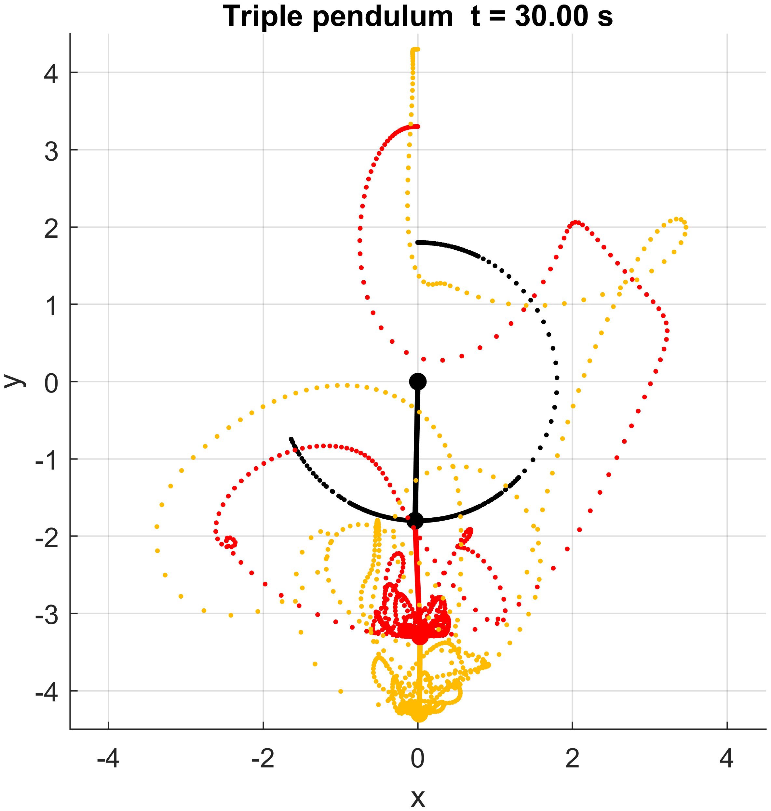

Project
Triple Pendulum Physics Simulation
A high-fidelity physics simulation of a triple pendulum system using Lagrangian analytical mechanics to derive the equations of motion, followed by numerical integration of the coupled nonlinear state-space system.
Project Summary
This project models the coupled nonlinear motion of a triple pendulum from first principles. The equations of motion are derived through symbolic Lagrangian mechanics, then converted into a fast numerical function for repeated simulation. The Python version extends the original MATLAB implementation with SymPy-based symbolic derivation and SciPy time integration, making the dynamics easier to reproduce, inspect, and modify.
The system illustrates how a compact analytical model can produce highly sensitive, chaotic motion once the coupled pendulum dynamics are integrated over time.
Key Results
- Derived the full triple-pendulum equations of motion using a symbolic Lagrangian formulation.
- Cached the symbolic angular acceleration expressions into a NumPy-vectorized function for fast reruns.
- Integrated the nonlinear state-space system with SciPy's RK45 solver using strict tolerances.
- Implemented both MATLAB and Python versions to compare the analytical model and simulation workflow.
Illustration Video
Selected Figure
